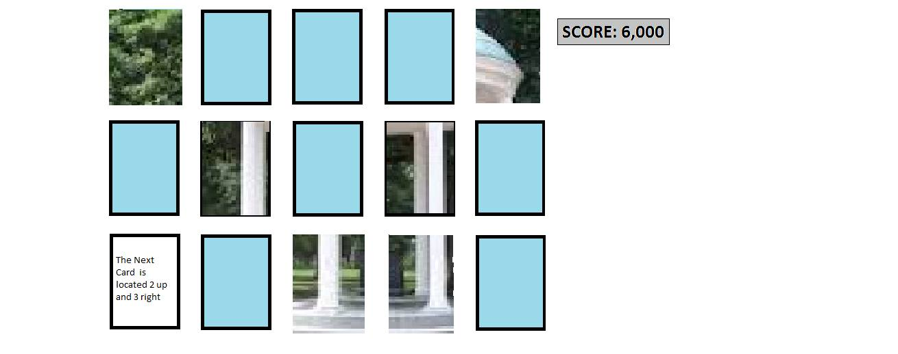
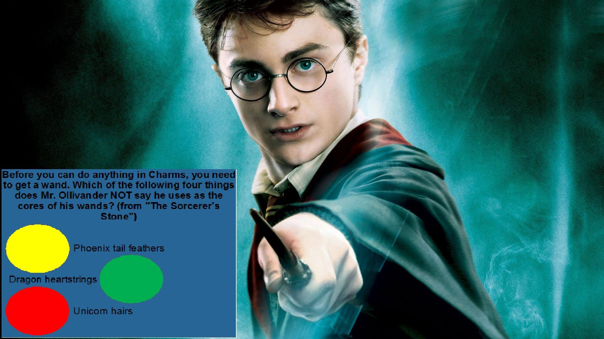
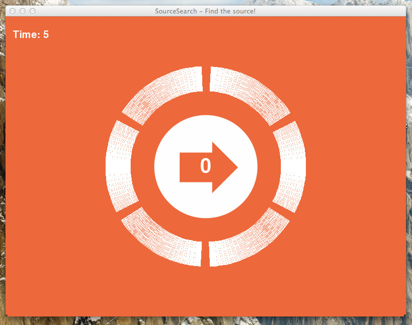

3-1 game system (JavaScript, JavaServer Pages, BootStrap and Python based) Direction card game (Cassidy), Audio game (David), Video pop-up game (Tim). Content/Styling by All(target audience is Alexi. A sister of a UNC student with disabilities. We will get inputs from her (Hannah) and Hannah's mom). Main page will have the option to play any of the three games. Video Pop-Up game will have option to play three different themes (Winnie the Pooh, Percy Jackson and Harry Potter). Audio will have favorite songs. Direction card game will have pictures. The game system will use MySQL, MS Excel and text files to draw inputs from. These will be questions, answers, and links to videos. This will be used with Eye-Gaze and/or one switch operation.
PID: 720114362
PID: 720165120
PID: 720145167
JavaScript-based with links to online sites for images
Use card directions to select next card (2-32 cards)
-ex. “The next card is located 2 up and 3 right”
New directions given for wrong selection
-ex. “Oops, you need to be 1 up and 1 right”
Sound or short animation after each correctly answered question
When board is cleared the board will show a picture
JavaScript program that will grab Q&A from a file and videos from links.
Start screen will have options to play either Percy Jackson, Winnie the Pooh or Harry Potter.
Video will start and play for a random amount of time then stop for a Q&A. After a one button switch answer it will show correct answer and then continue to play. This will happen until the video ends.
May incorporate a mobile version to have for her in transit use. This version, if done, will stop the video for a few seconds to let her think about answer and then start movie again.
Back End Server will store the questions, answers and links.
JavaScript game that will challenge hearing abilities.
Objective: Player tries to find the “sources” of the background music and gain the highest score
Listen to audio balance of the music. If the music is louder on the right side then player will need to swipe from the right or use Eyegaze and look at the right to shift the volume to the leftward direction. Vice versa for left side.
Every step costs a point but finding a source will give you more points. See how high your score can go by the end of the playlist.
Customizable settings such as user-created playlist
Back End Server will store the playlist needed for the game.
